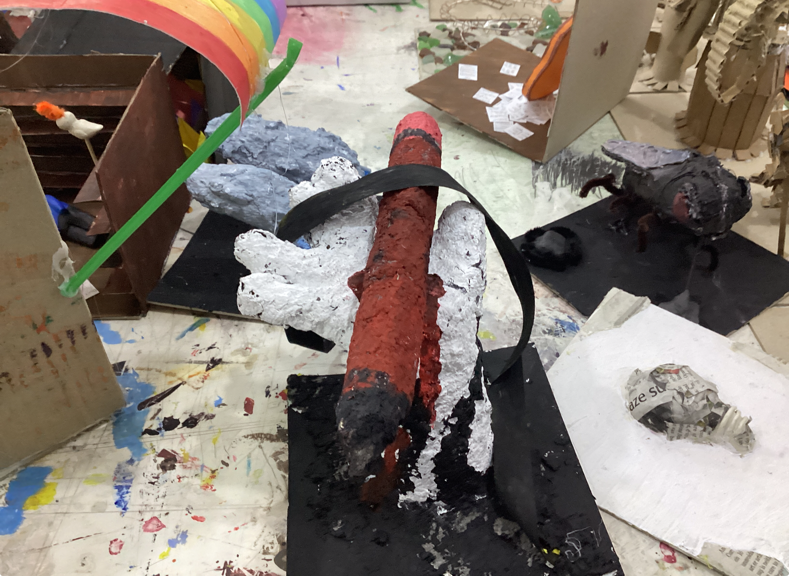
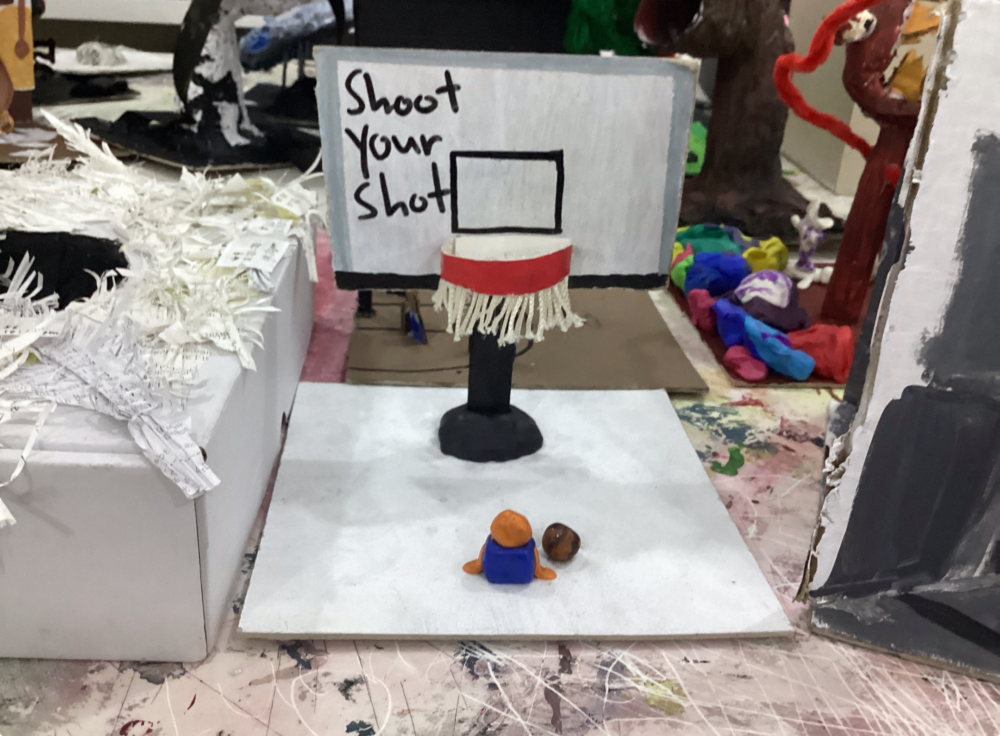
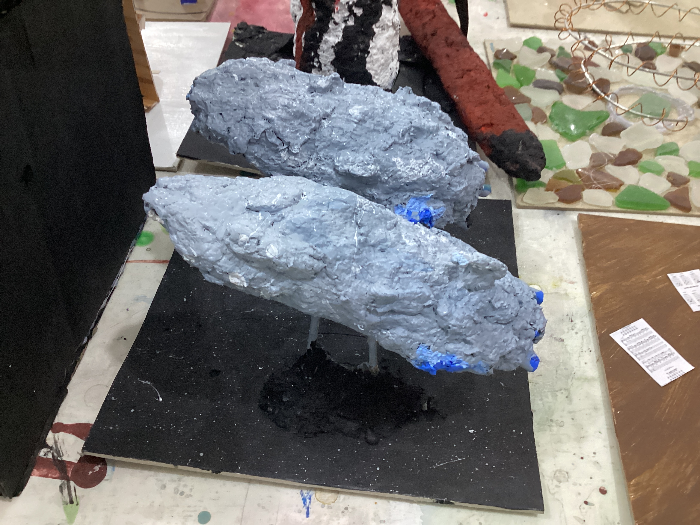
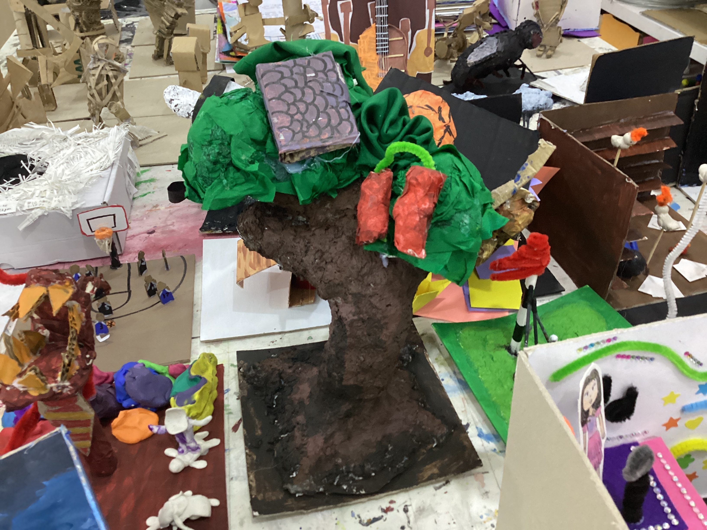

VISUAL ARTS
Our project in Visual Arts is integrated with Social Studies. Our task was to create a contemporary sculpture in relation to different communities and peace building. Students are tasked with creating artwork that reflects their chosen community.
Pax

In this piece, a lightbulb represents my constant stream of bright ideas and the energy I bring to our school community. To capture my playful side, I added fuzzy wires
which is a nod to the fun, silly, and slightly chaotic spirit I try to share with those around me. However, the bulb is crafted from ripped paper, a reflection of indecision. It shows the moments I hesitate and tear things down because I’m not sure which path to take.
Ava

My artwork shows a power bank as a symbol of a person who gives energy to others. The idea is that others come to it while feeling drained and empty, but leave feeling happy and alive again.
Ino

My project depicts an unfinished guitar made of sheet music over a pile of the latter, with a backdrop of finished guitars behind it. The unfinished guitar symbolizes how I'm still learning, compared
to other guitarists in my family (which are represented by the backdrop), and the chord charts, tablatures, and sheet music represents how I'm built on practice.
Anton

This artwork shows a hand coming out of the ground. The hand is holding a pencil while ribbons tie it, trying to bring it back down. The pencil represents me in the art community, the hand represents me and the ribbon represents me holding myself back.
Aoki

My art piece contains a golf green and clubs that surrround the red flag pole, representing what my family and I do. There are four clubs, arranged from shortest to tallest representing my family members and the different skill levels. A golf ball is placed at the 2nd shortest club among them, representing what my skill level is compared to my family's, which always motivates me as I've always wanted to be at the level of my grandpa. It shows that I do really need to improve, but of course by taking the right steps to get to the next level.
Aly

I created a basketball hoop with the slogan “shoot your shot”. This message is for people- not basketball players in general- to not be afraid with the ball. 🧠
Ellie

My artwork shows a girl in a library, with doves circling around carrying flames that represent inspiration or their spark. Shes holding the flame in her hands, and it’s supposed to represent how I want to give people that "spark" for writing and reading through my work, and how I wish to inspire others. The room is littered with pages and books with inspirational and curt messages, showing the messy nature of literature and writing.
Lucas Tieng

If you've watched Star Wars, you might know the design of these ships. It is based on the mc80A Home One star cruiser. I chose it because every MC(Mon Cala) ship was a unique one, not mass produced in a massive factory. This ties in to me, as I'm slightly different in every community I'm in. The MC80 is also a ship that can do many jobs, be it deploy starfighters, engage in capital ship combat, or transport of troops and resources, like how I can take on many roles in communities. Lastly, I chose this specific thing because I've always been a Star Wars fan.
Nathan

I believe in my life, growth doesn’t happen alone, I grow with many things, my hobbies, my friends, my family, and what surrounds me. I believe throughout every obstacle I go through, I strive to grow from it. That's what the tree represents.